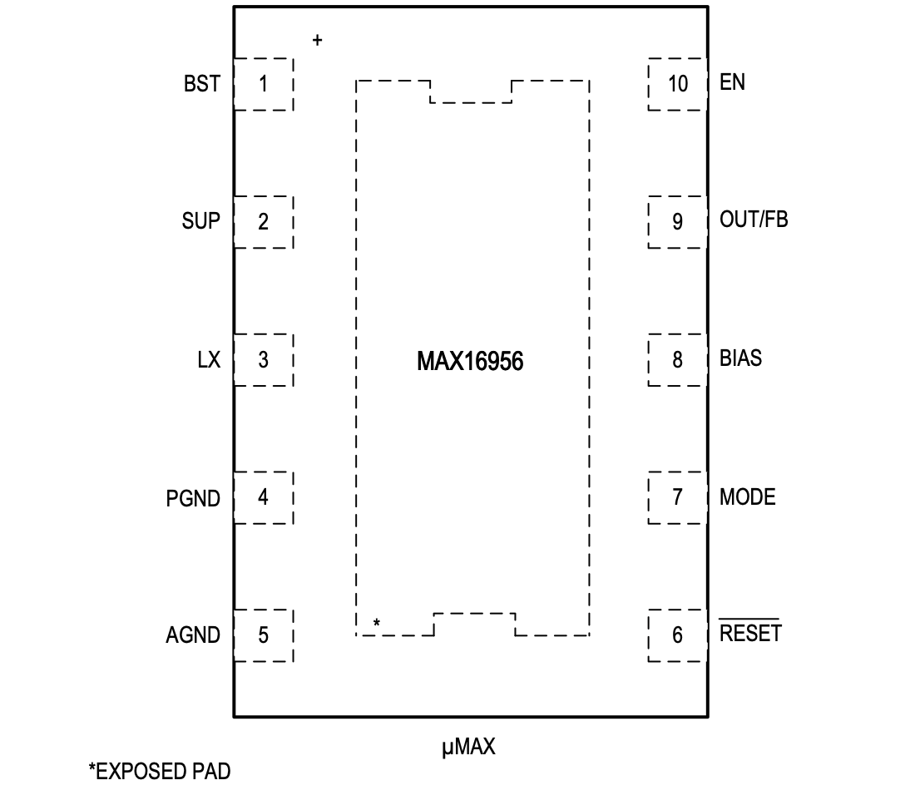

MAX16956

Pin Description
| PIN | NAME | FUNCTION |
|---|---|---|
| 1 | BST | High-Side Driver Supply. Connect a 0.1μF bootstrap capacitor between LX and BST. |
| 2 | SUP | IC Supply Input. Connect a minimum of 4.7μF ceramic capacitor from SUP to PGND. |
| 3 | LX | Buck Switching Node. LX is high impedance when the device is off. |
| 4 | PGND | Power Ground. Connect to AGND under the device in a star configuration. |
| 5 | AGND | Analog Ground. Connect to PGND under the device in a star configuration. |
| 6 | RESET | Open-Drain Reset Output. An external pullup resistor is required. |
| 7 | MODE | Mode Switch-Control Input. Connect to ground or leave open to enable skip-mode operation under light loads. Connect to BIAS to enable forced-PWM mode. MODE has a 1MΩ internal pulldown. |
| 8 | BIAS | 5V Internal Logic Supply. Connect a 1μF ceramic capacitor to AGND. |
| 9 | OUT/FB | MAX16956A/B/D/E (Fixed Output): Buck Regulator Voltage-Sense Input. Bypass OUT to PGNDwith a minimum 22μF X7R ceramic capacitor. MAX16956C/F (Adjustable Output): Feedback Input. Connect FB to a resistive divider between the buck output and AGND to set the output voltage. |
| 10 | EN | SUP Voltage-Compatible Enable Input. Drive EN low to disable the device. Drive EN high to enable the device. |
| - | EP | Exposed Pad. Connect EP to a large copper ground plane for effective power dissipation. Do not use EP as the only IC ground connection. EP must be connected to PGND. |